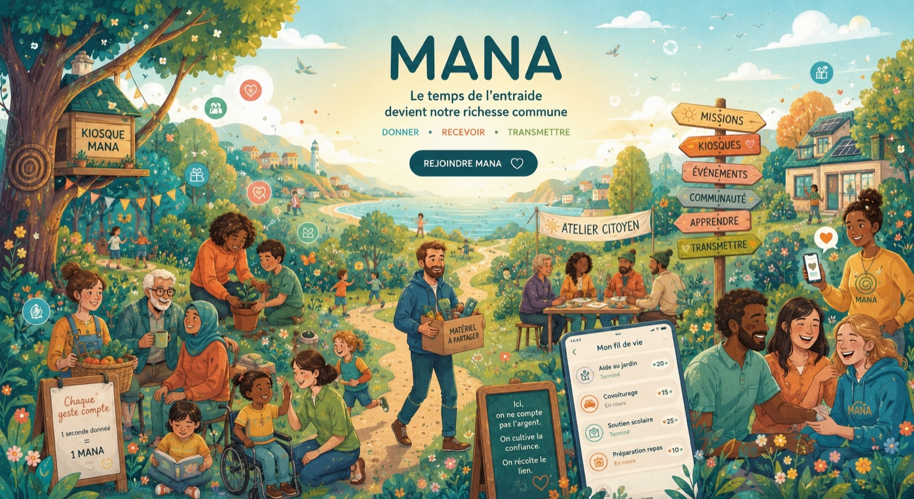

La Terre de MANA.
Imaginez un territoire où l'entraide redevient naturelle. Des voisins. Des familles. Une Maison MANA. Une côte. Un phare. Un même horizon.

Une seule application pour veiller sur ses proches, s'entraider entre voisins et transmettre ce qui compte vraiment.

Nous savons compter l'argent.
Nous savons compter les kilomètres.
Nous savons compter les clics.
Mais presque jamais le soin.
Chaque jour pourtant, ce sont les gestes de soin qui maintiennent notre société debout. MANA les rend visibles.
Votre attention n'est jamais vendue.
Votre mémoire vous appartient.
Vos proches passent avant les algorithmes.
Le temps partagé mérite d'être reconnu.
Imaginez un territoire où l'entraide redevient naturelle. Des voisins. Des familles. Une Maison MANA. Une côte. Un phare. Un même horizon.

Une invitation, sans jargon ni technique, pour comprendre tout l'univers MANA — le temps partagé, le soin, la transmission.